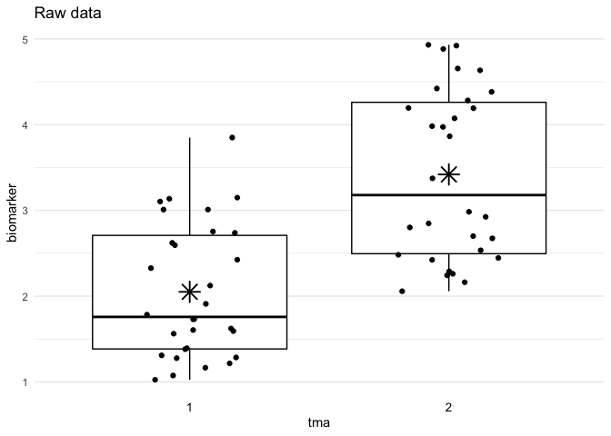
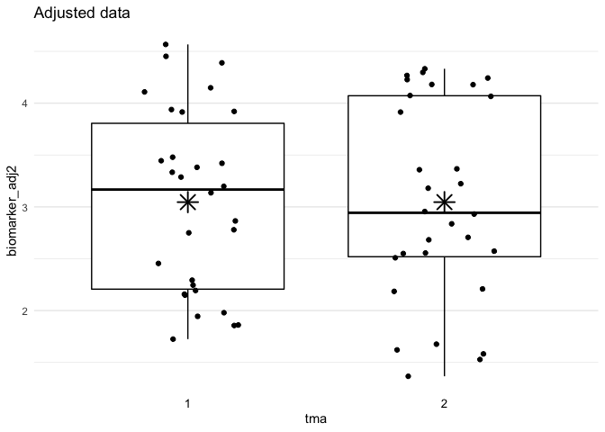

The goal of the batchtma package is to provide functions for batch effect-adjusting biomarker data. It implements different methods that address batch effects while retaining differences between batches that may be due to “true” underlying differences in factors that drive biomarker values.
batchtma can be installed from CRAN using:
install.packages("batchtma")To install a potentially newer version from GitHub, use:
# install.packages("remotes") # The "remotes" package needs to be installed
remotes::install_github("stopsack/batchtma")Load the package:
Define example data with batch effects:
df <- data.frame(tma = rep(1:2, times = 30),
biomarker = rep(1:2, times = 30) + runif(max = 3, n = 60))Run the adjust_batch() function to adjust for batch effects:
df_adjust <- adjust_batch(data = df, markers = biomarker, batch = tma, method = simple)
plot_batch(data = df, marker = biomarker, batch = tma, title = "Raw data")
plot_batch(data = df_adjust, marker = biomarker_adj2, batch = tma, title = "Adjusted data")
The package implements five different approaches to obtaining batch effect-adjusted biomarker values. The methods differ depending on what distributional property of batch effects they address and how they handle “true” between-batch differences. Such differences can result from confounding when batches include samples with different characteristics that are expected to lead to differences in biomarker levels. They should ideally be retained when performing batch effect adjustments.
| # | method = |
Approach | Addressed | Retains “true” between-batch differences |
|---|---|---|---|---|
| 1 | — | Unadjusted | — | Yes |
| 2 | simple |
Simple means | Means | No |
| 3 | standardize |
Standardized batch means | Means | Yes |
| 4 | ipw |
Inverse-probability weighting | Means | Yes |
| 5 | quantreg |
Quantile regression | Low and high quantiles | Yes |
| 6 | quantnorm |
Quantile normalization | All ranks | No |
Stopsack KH, Tyekucheva S, Wang M, Gerke TA, Vaselkiv JB, Penney KL, Kantoff PW, Finn SP, Fiorentino M, Loda M, Lotan TL, Parmigiani G*, Mucci LA* (* equal contribution). Extent, impact, and mitigation of batch effects in tumor biomarker studies using tissue microarrays. eLife 2021;10:e71265. doi:10.7554/elife.71265.